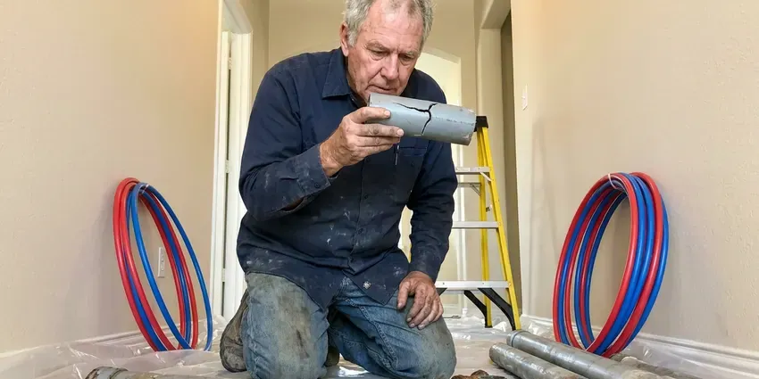

Slab Leak Detection in Kenosha, WI
Many homes in Kenosha, WI sit on concrete slabs. We locate the leaking line underneath and mark it within inches for a neat repair.
- Foundation Protection
- Quick Leak Detection
- Modern Diagnostics
- Reroute and Repair Options
Find the Leak Under Your Slab Before It Damages Your Home in Kenosha, WI.
Our team is ready to find and fix your slab leak efficiently.
Reliable Slab Leak Detection Services in Kenosha, WI
Here at HKV Plumbing, we understand the challenges homes face with shifting soils and aging plumbing. Our technicians are ready to accurately locate and assess any slab leak in your Kenosha, WI property.
Our expertise includes:
- Hot and cold side pressure isolation to verify slab leaks
- Thermal imaging cameras to detect temperature changes from leaks.
- Thermal imaging to identify small temperature changes

Additional Plumbing Maintenance Services in Kenosha, WI
Our maintenance and specialty plumbing services in Kenosha, WI catch small problems before they become emergencies.


Customers
Why Choose HKV Plumbing for Slab Leak Detection in Kenosha, WI?
We locate the leak, explain your repair options and help you decide between spot repair, rerouting and repiping. Our recommendations are based on the condition of your pipes, not on selling the largest job.
- Water Bills, Even a small slab leak can waste hundreds of gallons of water a day, causing your water bills to jump dramatically.
- Property Value, Undetected and unrepaired slab leaks can seriously diminish your home's value and make it difficult to sell in the future.
- Honest Options, We compare spot repair, reroute and repipe so you choose what fits your home.
Citywide Coverage
No matter where you are in Kenosha, WI, our experienced plumbers are ready to respond quickly to your slab leak concerns. We understand the urgency and provide complete coverage to protect homes across the entire area.
Experienced Team
Our slab leak technicians have located leaks under tile, carpet, hardwood and polished concrete. They know how to separate real leak sounds from noise like household appliances and traffic.
Safety-First Approach
At HKV Plumbing, safety and code compliance are paramount for every slab leak detection project. We adhere to all local plumbing codes in Kenosha, WI and state regulations to protect the integrity and safety of your home's plumbing system.
Trusted Certified Kenosha Plumbing Services Professionals
At HKV Plumbing, we take pride in providing licensed, certified plumbing services throughout Kenosha, WI. Backed by leading industry credentials, our experienced plumbers combine technical skill with genuine customer care. Whether it is repair, installation, or maintenance, we follow strict safety and quality standards to deliver lasting results you can trust.
Call Us Now PHCC Plumbing Contractor Recognition
PHCC Plumbing Contractor Recognition Better Business Bureau (BBB) Accreditation
Better Business Bureau (BBB) Accreditation Angi Certified Pro
Angi Certified Pro ISO 9001 Quality Management Certification
ISO 9001 Quality Management CertificationReliable Slab Leak Detection Services in Kenosha, WI
Residential Slab Leak Detection in Kenosha
We provide complete slab leak detection services tailored for residential properties throughout Kenosha. From single-family homes to townhouses, we understand the common plumbing systems and foundation types found in the area. Our goal is to promptly find the leak, provide a clear explanation and offer effective repair solutions to protect your home and peace of mind.

Electronic Leak Detection in Kenosha
For elusive leaks, our electronic leak detection equipment sends a signal through your pipes and measures changes that indicate a breach. This technology allows us to locate leaks in many pipe materials, including copper, PEX and PVC, commonly found in Kenosha homes. It helps prevent exploratory digging, saving you time and money.
Non-Invasive Leak Detection in Kenosha, WI
Our primary goal is to locate your slab leak with the least amount of disruption possible. We prioritize non-invasive techniques like acoustic and thermal imaging before considering any intrusive methods. This approach saves your home in Kenosha, WI from unnecessary damage, preserves your landscaping and lowers the overall cost and time of the repair process.
Cold Water Slab Leak Detection in Kenosha, WI
Cold water slab leaks do not create warm spots, so they are harder to see. They often show up as a running water meter, damp carpet, a musty smell or water seeping at baseboards. We isolate the cold side and use acoustic equipment to listen for the leak through the slab. Line tracers map the pipe route so we know where to listen.
Video Pipe Inspection for Sewer Leaks in Kenosha, WI
Sewer line issues under a slab can also look like slab leak symptoms. We use high-resolution video cameras to inspect the interior of your drain lines, identifying cracks, blockages or separations. This is vital if the issue isn't a pressurized water line, helping us determine if a sewer line repair is needed instead for your Kenosha home.
Slab Leak Reroutes in Kenosha
Rerouting abandons the leaking line under the slab and runs new pipe through the walls or attic. It avoids breaking concrete and often costs less than direct access under finished floors. We typically use PEX for reroutes because it handles heat and resists hard-water corrosion. This option is popular when the slab is covered in tile or hardwood.
Hot Water Slab Leak Detection in Kenosha
Hot water lines leak under slabs more often than cold lines because heat speeds up corrosion and causes expansion and contraction. Signs include warm spots on the floor, a water heater that runs nonstop and higher gas or electric bills. Thermal imaging shows the heat pattern spreading through tile or concrete. We confirm with a pressure test and acoustic listening before marking the spot.

Cost-Effective Slab Leak Detection in Kenosha
Investing in professional slab leak detection with HKV Plumbing is a budget-friendly solution compared to the long-term damage of an undetected leak. Our accurate diagnosis prevents unnecessary excavation and helps you address the problem before it grows into expensive foundation repairs or mold remediation, protecting your investment in your Kenosha property.
Slab Leak Detection Near Me in Kenosha, WI
When you suspect a slab leak, a quick local response limits the damage to your floors and foundation. Our technicians are based near Kenosha and can usually schedule testing within a day. We bring all detection equipment on the first visit.
We know the slab types and plumbing materials used in homes built across different decades around Kenosha. That background helps us locate leaks more quickly and recommend the right repair. Local service also means easy follow-up if anything comes up later.
HKV Plumbing at a Glance
- Licensed and insured plumbers serving Kenosha, WI
- Same-day appointments and 24/7 emergency response
- Upfront, flat-rate pricing before work begins
- 4.8-star rated by 448+ Wisconsin customers
Kenosha Map
Kenosha Information
- Population
- 98,211
- Area codes
- 262/414/847
- Service area
- Kenosha and communities within 40 miles
- Nearby
- Racine, West Allis, Waukesha, Milwaukee
Slab leaks in Kenosha, WI are particularly concerning because saturated soil can shift under a foundation, making even small leaks worse over time. Glacial soils in Wisconsin range from heavy clay to sand and gravel, which affects how water moves around foundations and buried lines.
Expert Services
Trust our professionals for reliable HKV Plumbing solutions in Kenosha, WI.
Our Specialized Plumbing Services in Kenosha, WI
At HKV Plumbing, we provide a complete range of plumbing services across Kenosha, WI. From leak detection to full system installations, our team ensures fast, precise, and affordable service for both residential and commercial properties. Explore our core services below:


Here Is How Our Slab Leak Detection Process Works in Kenosha, WI
We follow a step-by-step approach to accurately pinpoint the source of your slab leak, delivering efficient and effective solutions for properties in Kenosha, WI.
Request a Quote
Call (414) 432-4641 to schedule your slab leak detection service. Our team will gather initial information about your concerns and arrange a convenient time for an on-site visit.
On-Site Inspection
Our experienced technicians arrive at your Kenosha home, performing a visual assessment and using equipment like acoustic listening devices and thermal cameras to identify the leak's location.
Diagnosis & Plan
Once the leak is precisely located, we provide a detailed diagnosis and present you with clear options for repair. We go over the best course of action to resolve the issue effectively.
Frequently Asked Questions About Slab Leak Detection in Kenosha
The cost for professional slab leak detection in Kenosha, WI typically ranges from $250 to $700, depending on the complexity of the leak and the time required for diagnosis. This initial detection fee is separate from any repair costs, which can vary a lot based on the leak's location and required pipe repair.
Common pipe materials prone to slab leaks include older copper pipes vulnerable to corrosion from hard water or soil acidity, and sometimes PEX or CPVC if they were improperly installed or exposed to extreme temperatures. Galvanized steel pipes, though less common under slabs today, can also corrode and leak.
Yes. Our slab leak repairs and reroutes carry a written workmanship warranty, and PEX systems from brands like Uponor include long manufacturer warranties. We explain the coverage before you approve the work. That gives you peace of mind on the repair.
Reroutes and repipes often require a plumbing permit, while small direct repairs may not. Requirements vary by city and county. We take care of permits and inspections when needed.
We stand by the accuracy of our slab leak detection services. While detection itself is a diagnostic service, we make sure our findings are accurate. Any subsequent repairs performed by HKV Plumbing come with our standard labor and parts warranties, which will be plainly outlined for you.
HKV Plumbing relies on industry-leading brands for our slab leak detection equipment, including but not limited to LeakTronics, FLIR thermal cameras and specialized acoustic sensors. These tools are chosen for their accuracy and dependability in various leak detection scenarios, delivering the best results for your home.
Many homeowner insurance policies cover the cost of water damage from a sudden or accidental slab leak, and sometimes the cost of accessing the leak for repair. However, coverage varies a lot, so it's essential to check your specific policy with your insurance provider.
Once the slab leak is accurately detected, our technician will provide you with a detailed report and discuss the best repair options. These options may include trenchless repair, re-routing the affected pipe or traditional slab excavation and repair. We will then provide a transparent estimate for the repair work.
What People Are Saying About Our Plumbing Experts?

Sofia M.
Two new toilets installed in one visit, no mess left behind, and the tech even adjusted a faucet he noticed was dripping. Fair pricing and really friendly.
Toilet Installation · Waukesha, WI
Robert G.
The trenchless sewer replacement saved our front yard. They walked us through the camera inspection footage first so we knew exactly what we were paying for.
Sewer Line Replacement · Wauwatosa, WIJames P.
Our commercial plumbing system had a leak under the sink, and HKV Plumbing handled it professionally. The plumbers arrived quickly and restored everything without disruption to our customers.
Commercial Plumbing · West Allis, WI
Daniel K.
A pipe burst at 11 pm and they actually answered. The plumber showed up within the hour, shut everything down, and had us back to normal the next morning. Could not ask for more.
Emergency Plumbing · Janesville, WI
Mark T.
When our office needed drain cleaning, HKV Plumbing provided quick, reliable service. The plumber arrived on time and made sure every drain flowed perfectly before leaving. Very satisfied.
Drain Cleaning · Racine, WI
Emily R.
I called HKV Plumbing for plumbing repair, and the technician was fast, polite, and thorough. They explained the problem clearly and fixed it the same day. I will definitely hire them again. Highly recommended!
Plumbing Repair · Kenosha, WI